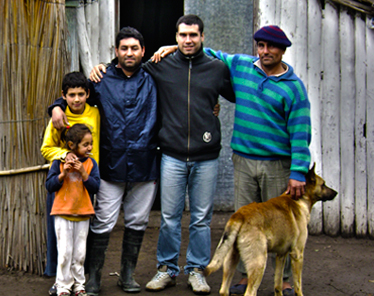

La invernada: Provincia de Corrientes
Inicio 2005,
distancia desde Bs.As. 750 Km,
este paraje no posee ni Luz,
ni agua potable,
tampoco gas natural.

Mas allá de Bs As
Esta obra se desarrolló en el sur de la provincia de Corrientes, en el “Paraje La Invernada”
Departamento 5 - GOYA, a aproximadamente 750 Km. de Buenos Aires. Comenzó en Marzo de 2005.
Está formada por habitantes de algunos potreros en suma pobreza, sin servicios de salud,
ni asistencia alguna por parte del gobierno de la provincia. Las personas que asistimos
habitualmente son aproximadamente treinta,
Cada familia recorre varios kilómetros a pie o a caballo para poder reunirse
les visitamos periódicamente, (cada 30-45 días) aparte sostienen dos
encuentros semanales, guiados por un líder, su familia y algunos colaboradores.
Cada familia recorre varios kilómetros a pie o a caballo para poder reunirse
LAS CARAS DE LA OBRA
-
-
La Invernada: Jornada de tratamiento odontologico
- Asistencia odontologica gratuita a las casi 30 familias, pudimos colaborar y devolverle la
sonrisa a muchas personas.
Leer más »
-
-
El toba: día del niño
- Celebramos el día del niño junto a mas de 50 chicos, hubo jugos y regalos, ademas de la particiacion de payasos animando la fiesta.
Leer más »
-
NOTAS DE INTERÉS
-
Nota de interes, opinion de la actualidad, mensualmente #1
- Domingo 15, Feb 2012
Este es la descripción corta de la historia de jose, debe estar contada de manera breve e introductoria, capaz captar el interes.
Este es la descripción corta de la historia de jose, debe estar contada de manera breve e introductoria, capaz captar el interes.
Leer más »